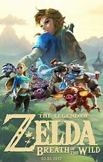
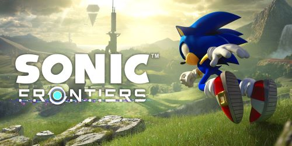
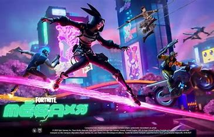

Sonic Frontiers is a 2022 platform game developed by Sonic Team and published by Sega. As Sonic, the player explores the Starfall Islands to collect the Chaos Emeralds, after Sonic and his friends are separated when falling through a wormhole. Frontiers integrates traditional Sonic the Hedgehog elements—such as platforming, rings, and grind rails—into the series' first open world.
Sonic Frontiers is a 3D platformer and action-adventure game. As Sonic, the player explores the Starfall Islands (which consist of various biomes including flowery fields, forests, ancient ruins, and deserts) to collect the Chaos Emeralds and investigate the islands' relationship to them. Sonic retains his abilities from previous Sonic the Hedgehog games.
Doctor Eggman travels to the abandoned Starfall Islands to steal the technological secrets created by the Ancients, creatures related to Chaos. When he uploads his artificial intelligence unit, Sage, into a portal, several robotic defense units are summoned. Detecting a threat signature, Sage ceases hijacking the portal and initiates a protection protocol, dragging Eggman into an artificial dimension called Cyber Space.
Following the release of Sonic Forces (2017), Sonic Team began exploring approaches for its next Sonic the Hedgehog game. In addition to celebrating the series' upcoming 30th anniversary, the developers sought to define what a modern Sonic game should be and solidify the series' direction for the next decade.
Sega planned to release Sonic Frontiers in 2021 to coincide with the franchise's 30th anniversary but delayed it by one year for quality control. Frontiers finished development on October 22, 2022, and released on November 8, 2022, for the Nintendo Switch, PlayStation 4, PlayStation 5, Windows, Xbox One, and Xbox Series X/S.
Nintendo Life characterized early Frontiers gameplay footage as divisive. Kotaku felt the game looked fine but derivative and bland, lacking the series' unique identity, and Polygon and Nintendo Life found the open world desolate. Some fans demanded the game be delayed, and the hashtag #DelaySonicFrontiers briefly trended on Twitter. Iizuka said that Sonic.
• Japan portal
•Video games portal
• Official website
The Legend of Zelda: Breath of the Wild is a 2017 action-adventure game developed and published by Nintendo for the Nintendo Switch and Wii U. Set at the end of the Zelda timeline, the player controls an amnesiac Link as he sets out to save Princess Zelda and prevent Calamity Ganon from destroying the world.
Breath of the Wild is an open world action-adventure game. Players are tasked with exploring the kingdom of Hyrule while controlling Link. Breath of the Wild encourages nonlinear gameplay, which is illustrated by the game's lack of defined entrances or exits to areas, scant instruction given to the player, and encouragement to explore freely.
Breath of the Wild takes place at the end of the Zelda timeline in the kingdom of Hyrule. In ancient times, the ancient Sheikah race had developed Hyrule into an advanced civilization, protected by four enormous animalistic machines called the Divine Beasts and an army of autonomous weapons called Guardians.
Nintendo EPD, an internal division of Nintendo, developed Breath of the Wild for the Nintendo Switch and Wii U. According to series producer Eiji Aonuma, the development team aimed to "rethink the conventions of Zelda". Development started immediately upon the release of The Legend of Zelda: Skyward Sword (2011).
Aonuma originally teased the game for the Wii U in January 2013 during a Nintendo Direct presentation. The game, he continued, would challenge the series' conventions, such as the requirement that players complete dungeons in a set order.
Breath of the Wild received "universal acclaim", according to the review aggregator Metacritic. The game is the highest-rated of 2017 on Metacritic, and holds the largest number of perfect reviews of any game from any year. Several critics called the game a masterpiece.The open-world gameplay received praise.
Shortly after Breath of the Wild's release, journalists and video game in0dustry figures discussed how it would influence future open-world games and the Zelda series.
• Official website
• The Legend of Zelda: Breath of the Wild at MobyGames
• The Legend of Zelda: Breath of the Wild at IMDb
game picture



fortnite
Fortnite Battle Royale: a free-to-play battle royale game in which up to 100 players fight to be the last person standing.
Fortnite: Save the World: a cooperative hybrid tower defense-shooter and survival game in which up to four players fight off zombie-like creatures and defend objects with traps and fortifications they can build.
Fortnite Creative: in which players are given complete freedom to create worlds and battle arenas.